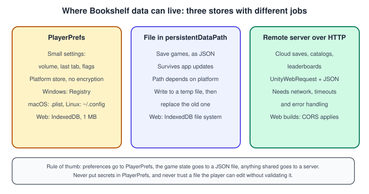
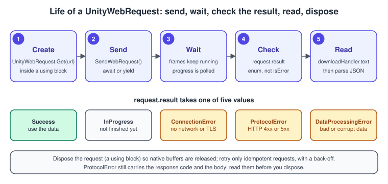

Saving, Loading and HTTP Networking
|
This content was generated with the assistance of AI and should be verified against the official documentation before being relied on in production. |
A game that forgets everything when it closes is a toy, and a game that cannot talk to a server cannot have a leaderboard, cloud saves or downloadable content. Both problems are the same problem seen from two sides: turn the state of the game into bytes, put the bytes somewhere (a file, a preference store, a server) and read them back safely. This page builds the persistence layer of the Bookshelf game "Shelve-it": a versioned JSON save file with the score, the best time and the position of every book, preferences kept in PlayerPrefs, and an HTTP client that fetches a leaderboard and posts a score.
The facts were checked in November 2026. The page documents Unity 6.3 LTS (6000.3) with the Newtonsoft Json package 3.2 where it is mentioned, and notes where 6.6 changed something that matters (the default of domain reload). It works on desktop, mobile, consoles and the Web platform; the places where Web behaves differently are called out. The general C# background (async and await, exceptions, memory) is in Asynchronous Programming: async and await and Exceptions and Error Handling; the Awaitable class is also introduced in C# Scripting and the MonoBehaviour Lifecycle.
Three places to keep data

Choose the store by what the data is, not by what is convenient:
-
Preferences (volume, last selected tab, accessibility options) are small and may be lost without disaster. Use
PlayerPrefs. -
The game state (score, progress, unlocked books) is precious and must survive crashes and updates. Use a file in
Application.persistentDataPath. -
Shared or remote data (leaderboards, cloud saves, catalogs) lives on a server and is reached over HTTP with
UnityWebRequest.
Whatever the store, the data goes through the same pipeline.
Serialising to JSON
JSON is the default choice: it is text, it can be read and diffed by a person, it has libraries on every platform and server, and it can be validated. Unity gives you two serialisers.
JsonUtility
JsonUtility is part of the engine. It uses the same serializer as the Inspector, so it follows the Unity serialization rules: it serialises fields, not properties; a field must be public or have [SerializeField], must not be static, const or readonly, and custom classes and structs need [Serializable]. It supports primitives, enums, Unity types such as Vector3 and Color, arrays and List<T> of those, and references to other serialisable classes. It does not support dictionaries, nested containers such as lists of lists, or a bare array as the top-level value; wrap a list in a class. Fields that are null object references are serialised as an object with default values rather than as null.
JsonUtility is small and fast, produces little garbage and works on every platform, including ones where reflection-based libraries are restricted. Those limits make it a good fit for save files that you design for it.
using System;
using System.Collections.Generic;
using UnityEngine;
/// <summary>One book on the shelf or on the floor.</summary>
[Serializable]
public class BookRecord
{
public string id;
public Vector3 position;
public bool shelved;
}
/// <summary>The whole "Shelve-it" save file. Keep it plain data: no references to scene objects.</summary>
[Serializable]
public class BookshelfSave
{
public const int CurrentVersion = 2;
public int version = CurrentVersion;
public int score;
public float bestTimeSeconds;
public List<BookRecord> books = new List<BookRecord>();
}Newtonsoft Json
When the data does not fit the rules of JsonUtility (dictionaries, polymorphism, renamed fields, nullable values, custom converters), use the Newtonsoft Json package (com.unity.nuget.newtonsoft-json), Unity’s packaging of Json.NET. Install it from the Package Manager with Add package by name. It is slower and allocates more than JsonUtility, and it needs care with code stripping on IL2CPP builds (types you only reach through reflection must be preserved, see Build Profiles and Platforms), but it removes the structural limits.
using System.Collections.Generic;
using Newtonsoft.Json;
public class SettingsData
{
// Dictionaries work with Newtonsoft and not with JsonUtility.
[JsonProperty("keyBindings")]
public Dictionary<string, string> KeyBindings { get; set; } = new Dictionary<string, string>();
[JsonProperty("language")]
public string Language { get; set; } = "en";
}
public static class SettingsJson
{
public static string ToJson(SettingsData data) =>
JsonConvert.SerializeObject(data, Formatting.Indented);
public static SettingsData FromJson(string json) =>
JsonConvert.DeserializeObject<SettingsData>(json) ?? new SettingsData();
}Choose one serialiser per file format and stay with it: mixing them makes the field names and defaults drift apart.
Saving to a file
Application.persistentDataPath is a directory meant for data that must survive between runs. The path is different on each platform (a folder under AppData\LocalLow on Windows, ~/Library/Application Support on macOS, an app-specific files folder on Android, the Documents folder of the app container on iOS, ~/.config/unity3d on Linux, and an entry in the browser’s IndexedDB file system on the Web platform). Unity builds part of the path from your company name, product name and bundle identifier, so changing the bundle identifier changes where saves are found. Do not hard-code the path in a string; always build it from persistentDataPath with Path.Combine.
A safe write
A crash or a power cut in the middle of File.WriteAllText leaves a half-written file, and the player loses the save. The standard defence is to write the new content to a temporary file first and then replace the old file, so at every moment there is at least one complete file on disk. The service below also keeps a .bak copy, validates the version when loading and falls back to the backup if the main file is unreadable.
using System;
using System.IO;
using UnityEngine;
/// <summary>
/// Reads and writes Bookshelf save files as JSON in persistentDataPath.
/// Call Initialize once, from the main thread, before first use.
/// </summary>
public static class SaveService
{
static string root;
// Statics survive when domain reload is off (the default for new projects since Unity 6.6),
// so reset them explicitly when the player starts.
[RuntimeInitializeOnLoadMethod(RuntimeInitializeLoadType.SubsystemRegistration)]
static void ResetStatics() => root = null;
public static void Initialize()
{
// Application.persistentDataPath must be read on the main thread; cache it.
root = Application.persistentDataPath;
}
static string PathFor(string slot) => Path.Combine(root, slot + ".json");
public static bool Save(string slot, BookshelfSave data)
{
string path = PathFor(slot);
string temp = path + ".tmp";
string backup = path + ".bak";
try
{
string json = JsonUtility.ToJson(data, prettyPrint: true);
File.WriteAllText(temp, json);
if (File.Exists(path))
{
File.Replace(temp, path, backup); // atomic on most file systems
}
else
{
File.Move(temp, path);
}
return true;
}
catch (Exception e) when (e is IOException || e is UnauthorizedAccessException)
{
Debug.LogError($"Could not save slot '{slot}': {e.Message}");
return false;
}
}
public static bool TryLoad(string slot, out BookshelfSave data)
{
string path = PathFor(slot);
if (TryRead(path, out data))
{
return true;
}
// The main file is missing or damaged: try the previous version.
return TryRead(path + ".bak", out data);
}
static bool TryRead(string path, out BookshelfSave data)
{
data = null;
try
{
if (!File.Exists(path))
{
return false;
}
string json = File.ReadAllText(path);
data = JsonUtility.FromJson<BookshelfSave>(json);
if (data == null)
{
return false;
}
Migrate(data);
return true;
}
catch (Exception e) when (e is IOException || e is ArgumentException || e is UnauthorizedAccessException)
{
Debug.LogWarning($"Unreadable save file '{path}': {e.Message}");
return false;
}
}
/// <summary>Upgrades an old file to the current layout, one version at a time.</summary>
static void Migrate(BookshelfSave data)
{
if (data.version < 2)
{
// Version 1 stored no best time: use -1 meaning "never finished".
data.bestTimeSeconds = -1f;
data.version = 2;
}
}
}Three habits make a save system survive years of updates: store a version number in every file, migrate old files forward one version at a time in a single method, and never reuse a field name with a different meaning. Treat the file as input from an untrusted source: players edit save files, and a corrupt file must produce a message and a fallback, never an unhandled exception.
Saving without a hitch
For a small file a synchronous write takes microseconds and is fine. For large data, serialise on the main thread (Unity objects are involved) and write on a background thread with Awaitable, which resumes on the main thread when done.
using System.IO;
using UnityEngine;
public class AutoSaver : MonoBehaviour
{
string path;
void Awake()
{
path = Path.Combine(Application.persistentDataPath, "autosave.json");
}
public async Awaitable SaveAsync(BookshelfSave data)
{
string json = JsonUtility.ToJson(data); // main thread
await Awaitable.BackgroundThreadAsync(); // leave the main thread
File.WriteAllText(path, json);
await Awaitable.MainThreadAsync(); // come back before touching Unity objects
Debug.Log("Autosave written");
}
}Awaitable instances are pooled, so never await the same instance twice. On the Web platform, where the browser runs the player on a single thread, keep the synchronous version.
PlayerPrefs: what it is for and what it is not
PlayerPrefs stores strings, floats and ints under a key in a platform store. It is the quickest way to remember a volume slider. Its limits are exactly why it must not hold save games or secrets:
-
The values are not encrypted. Anyone with access to the device can read and edit them.
-
The store is different per platform: the Registry on Windows, a
.pliston macOS,SharedPreferenceson Android,NSUserDefaultson iOS, a file under~/.configon Linux, and IndexedDB (up to 1 MB) on the Web platform. Large values are slow and may be truncated. -
Keys are global strings: a typo creates a new key silently.
using UnityEngine;
/// <summary>Typed access to the few preferences of the Bookshelf.</summary>
public static class Prefs
{
const string MusicVolumeKey = "audio.musicVolume";
const string ShowTutorialKey = "ui.showTutorial";
public static float MusicVolume
{
get => PlayerPrefs.GetFloat(MusicVolumeKey, 0.8f);
set => PlayerPrefs.SetFloat(MusicVolumeKey, Mathf.Clamp01(value));
}
public static bool ShowTutorial
{
get => PlayerPrefs.GetInt(ShowTutorialKey, 1) == 1;
set => PlayerPrefs.SetInt(ShowTutorialKey, value ? 1 : 0);
}
/// <summary>Call when a settings screen closes; Unity also saves on a normal quit.</summary>
public static void Flush() => PlayerPrefs.Save();
}Source: Scripting API: PlayerPrefs
Wrapping the keys in one class removes the typo risk and makes the defaults visible in one place.
Why not BinaryFormatter
Older Unity tutorials save the game with BinaryFormatter, which turns any [Serializable] object graph into bytes in one line. Do not do this. Microsoft’s guidance is that BinaryFormatter is dangerous, insecure and cannot be made secure: loading a file means letting the file choose which types to construct, which allows an attacker to run code through a crafted save file, for example one downloaded as a "shared save". Starting with .NET 9 the in-box implementation throws on use. Even leaving security aside, its output is tied to the exact class layout, so renaming a field breaks every old save, and it is not readable by any other tool.
Use JSON (as above), or a schema-based binary format such as protobuf if you need compactness, and always validate the data after reading it.
HTTP with UnityWebRequest
UnityWebRequest is the engine’s HTTP client. It handles the flow of communication with a web server; DownloadHandler and UploadHandler post-process downloaded data and prepare uploaded data. It supports HTTPS, validating the server certificate against the platform’s trusted roots, and runs on all platforms; on the Web platform it goes through the browser, so the browser’s rules apply.

Four rules apply to every request:
-
A
UnityWebRequestowns native resources: dispose it, preferably with ausingdeclaration. -
SendWebRequestcan be called once; after it you cannot change the request’s properties. -
Check
request.result, not only the text.Successmeans the request completed and the response is available;ConnectionErrormeans it could not connect or establish a secure channel;ProtocolErrormeans the server answered with an error status (readresponseCode);DataProcessingErrormeans the data was received but could not be processed;InProgressmeans it is not finished. -
Set a
timeout(in seconds) so a dead network cannot hang a screen forever.
GET with a coroutine
Coroutines are the classic way to wait for a request without blocking the frame.
using System;
using System.Collections;
using UnityEngine;
using UnityEngine.Networking;
[Serializable]
public class LeaderboardEntry
{
public string player;
public int score;
}
[Serializable]
public class LeaderboardResponse
{
public LeaderboardEntry[] entries;
}
public class LeaderboardLoader : MonoBehaviour
{
// example.com is reserved for documentation: replace it with your own service.
[SerializeField] string url = "https://example.com/api/leaderboard?top=10";
void Start()
{
StartCoroutine(Load());
}
IEnumerator Load()
{
using UnityWebRequest request = UnityWebRequest.Get(url);
request.timeout = 10;
request.SetRequestHeader("Accept", "application/json");
yield return request.SendWebRequest();
if (request.result != UnityWebRequest.Result.Success)
{
Debug.LogWarning($"Leaderboard failed: {request.result}, HTTP {request.responseCode}, {request.error}");
yield break;
}
LeaderboardResponse response = JsonUtility.FromJson<LeaderboardResponse>(request.downloadHandler.text);
Debug.Log($"Got {response.entries.Length} entries");
}
}GET and POST with Awaitable
With async Awaitable, the same code reads top to bottom, can return a value and accepts a cancellation token. Awaitable.FromAsyncOperation turns the operation returned by SendWebRequest into something you can await. A MonoBehaviour provides destroyCancellationToken, which is cancelled when the object is destroyed, so a request started by a menu that is then closed does not call back into a dead object.
using System;
using System.Text;
using System.Threading;
using UnityEngine;
using UnityEngine.Networking;
public class LeaderboardClient : MonoBehaviour
{
[SerializeField] string baseUrl = "https://example.com/api";
[SerializeField, Min(1)] int timeoutSeconds = 10;
/// <summary>
/// The access token comes from your sign-in flow at run time. Never write a token
/// or an API key into the source code or into a scene: both ship inside the build.
/// </summary>
public string AccessToken { get; set; }
public async Awaitable<LeaderboardResponse> GetTopAsync(int count, CancellationToken cancellation = default)
{
string url = $"{baseUrl}/leaderboard?top={count}";
using UnityWebRequest request = UnityWebRequest.Get(url);
Prepare(request);
await Send(request, cancellation);
return JsonUtility.FromJson<LeaderboardResponse>(request.downloadHandler.text);
}
public async Awaitable PostScoreAsync(LeaderboardEntry entry, CancellationToken cancellation = default)
{
byte[] body = Encoding.UTF8.GetBytes(JsonUtility.ToJson(entry));
using var request = new UnityWebRequest($"{baseUrl}/scores", UnityWebRequest.kHttpVerbPOST);
request.uploadHandler = new UploadHandlerRaw(body);
request.downloadHandler = new DownloadHandlerBuffer();
request.SetRequestHeader("Content-Type", "application/json");
Prepare(request);
await Send(request, cancellation);
}
void Prepare(UnityWebRequest request)
{
request.timeout = timeoutSeconds;
request.SetRequestHeader("Accept", "application/json");
if (!string.IsNullOrEmpty(AccessToken))
{
request.SetRequestHeader("Authorization", "Bearer " + AccessToken);
}
}
static async Awaitable Send(UnityWebRequest request, CancellationToken cancellation)
{
try
{
await Awaitable.FromAsyncOperation(request.SendWebRequest(), cancellation);
}
catch (OperationCanceledException)
{
request.Abort();
throw;
}
if (request.result != UnityWebRequest.Result.Success)
{
throw new HttpRequestFailedException(request.result, request.responseCode, request.error);
}
}
}
public class HttpRequestFailedException : Exception
{
public UnityWebRequest.Result Result { get; }
public long StatusCode { get; }
public HttpRequestFailedException(UnityWebRequest.Result result, long statusCode, string message)
: base($"{result} (HTTP {statusCode}): {message}")
{
Result = result;
StatusCode = statusCode;
}
}A caller can then decide what each failure means:
using System;
using UnityEngine;
public class LeaderboardScreen : MonoBehaviour
{
[SerializeField] LeaderboardClient client;
async void Start()
{
try
{
LeaderboardResponse top = await client.GetTopAsync(10, destroyCancellationToken);
Debug.Log($"{top.entries.Length} entries");
}
catch (OperationCanceledException)
{
// The screen was closed: nothing to do.
}
catch (HttpRequestFailedException e) when (e.Result == UnityEngine.Networking.UnityWebRequest.Result.ConnectionError)
{
Debug.Log("Offline: showing the cached leaderboard.");
}
catch (HttpRequestFailedException e)
{
Debug.LogWarning(e.Message);
}
}
}Source: Scripting API: Awaitable.FromAsyncOperation, Scripting API: UnityWebRequest.Post, Scripting API: DownloadHandler
async void is acceptable only for event-like entry points such as Start; anywhere else return Awaitable so the caller can handle exceptions.
Downloading a texture
The Bookshelf shows cover art for each book. UnityWebRequestTexture creates a request whose download handler decodes the image into a texture; read it with DownloadHandlerTexture.GetContent, and destroy the texture when you are done with it, or the memory is never released.
using System.Collections;
using UnityEngine;
using UnityEngine.Networking;
public class CoverLoader : MonoBehaviour
{
[SerializeField] Renderer target;
Texture2D loaded;
public void Show(string url)
{
StartCoroutine(Download(url));
}
IEnumerator Download(string url)
{
using UnityWebRequest request = UnityWebRequestTexture.GetTexture(url);
request.timeout = 15;
yield return request.SendWebRequest();
if (request.result != UnityWebRequest.Result.Success)
{
Debug.LogWarning($"Cover not loaded: {request.error}");
yield break;
}
if (loaded != null)
{
Destroy(loaded);
}
loaded = DownloadHandlerTexture.GetContent(request);
target.material.mainTexture = loaded;
}
void OnDestroy()
{
if (loaded != null)
{
Destroy(loaded);
}
}
}For many images, or content that needs versioning and caching, use Addressables with a remote catalog instead of hand-written downloads (see Assets, Addressables and Content). The material.mainTexture line assumes a Built-In-style _MainTex property; in URP the Lit shader’s base map property is _BaseMap, so use SetTexture("_BaseMap", loaded) (see Render Pipelines Overview).
Talking to servers safely
-
Use HTTPS. Mobile platforms restrict plain HTTP by default, and credentials or tokens sent over HTTP can be read by anyone on the path.
-
Never ship secrets. An API key inside a build can be extracted. Put secrets on your server, authenticate players with short-lived tokens, and let the server do the privileged work.
-
Never trust the client. A leaderboard that accepts any score is a leaderboard of cheaters. Validate on the server.
-
Web builds follow browser rules. A request from a page to another origin needs the server to send CORS headers; without them the browser blocks the response even though the server answered. The general theory is in CORS, and Unity-specific Web details are in Web and WebGPU.
-
Handle failure as a normal state. Mobile networks drop. Time out, show cached data, retry idempotent requests (GET, and POST only if the server de-duplicates) with a growing delay, and never retry a
ProtocolErrorwith status 4xx unchanged. -
Do not parse on the main thread what you can avoid parsing. Very large JSON responses allocate; prefer paged requests.
For real-time multiplayer, polling a server is the wrong tool: see Multiplayer and Netcode and the networking theory in Multiplayer Game Architecture.
Common mistakes
-
Saving references to scene objects. A
GameObjectorTransformfield in the save class serialises as an instance ID, which means nothing in the next session. Save ids and plain values, and rebuild the scene objects when loading. -
Using a dictionary or a top-level list with
JsonUtility. The output is empty or wrong, with no error. Wrap lists in a class, or use Newtonsoft. -
Calling
Application.persistentDataPathfrom a background thread. Read it once on the main thread and cache it. -
Writing the save file in place. A crash during the write destroys the old file. Write a temporary file and replace.
-
Forgetting to dispose requests. Leaks native memory; use
using. -
Reading
request.downloadHandler.textafter a failure. OnProtocolErrorthe body may hold the server’s error message, which is useful to log, but never parse it as if it were the expected data. -
Ignoring
isDone-style polling on the wrong frame. Checkresult, not onlyisDone: a finished request can have failed. -
Static singletons that keep the old file in memory. With domain reload off (the default in new projects since 6.6) a static survives Play Mode runs. Reset statics with
RuntimeInitializeOnLoadMethod. -
Awaiting a pooled
Awaitabletwice. Await it once, or store aTask. -
Hard-coding the sandbox URL. Put the base URL in a
[SerializeField]or a ScriptableObject (see ScriptableObjects and Data-Driven Design) so builds can target different environments.
Performance notes
-
Serialise on the main thread and write on a background thread for large files; keep small saves synchronous.
-
JsonUtilityallocates one string per call; reuseJsonUtility.FromJsonOverwriteto fill an existing object when you load often. -
Avoid saving every frame. Save at checkpoints, on pause and on quit.
-
Compress large payloads (for example with
System.IO.Compression) only after measuring; JSON compresses well, but the CPU time costs on mobile. -
Keep requests small and batched; each request costs a connection setup unless the platform reuses connections.
-
Textures downloaded at run time cost memory like any texture; downscale on the server for thumbnails (see Profiling and Optimization).
What changed recently
| Version | Date | Change |
|---|---|---|
Unity 2020.2 |
2020 |
|
Unity 2023.1 |
2023 |
The |
.NET 9 |
2024 |
The in-box |
Unity 6.6 |
September 2026 |
New projects skip domain reload when entering Play Mode, so static fields in save and network code must be reset explicitly. |
Where the books are outdated
The two reference books cover this topic only in Unity in Action (UIA, 3rd edition), chapters 10 and 12; Game Development Patterns with Unity 2021 does not cover it.
-
UIA ch. 12: saving with
BinaryFormatter. The approach is insecure and, since .NET 9, the in-box implementation throws exceptions on use. Use the JSON approach and the safe write shown above. -
UIA ch. 10 and 12: web requests as coroutines. They still work and are shown above. The modern alternative is
async Awaitablewith a cancellation token, which can also return values. -
UIA ch. 12: serialising straight from scene objects. Keep a separate plain data class with a version number; it is easier to migrate and to test.
See also
-
Scene Graphs and Asset Formats: how scenes and assets are described and stored in general.
-
C# Scripting and the MonoBehaviour Lifecycle: Awaitable, coroutines and domain reload.
-
ScriptableObjects and Data-Driven Design: design-time data versus run-time save data.
-
Assets, Addressables and Content: remote content and catalogs.
-
Web and WebGPU: IndexedDB storage and CORS in browser builds.
-
Multiplayer and Netcode: real-time networking.
-
Testing and CI: testing the save system.
-
Memory Management and Disposal: why requests are disposed.